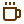
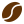

«Todos los días, en el mundo, se beben entre 1,600 y 2 mil millones de tazas. El 65% se toman en la mañana»

Cafe gourmet
Café gourmet es la denominación que recibe el café que ha sido
seleccionado desde la semilla que da lugara la planta la cual es ubicada en una zona
con el microclima y la altura (mínimo 1.000 msnm) adecuados para su correcto crecimiento,
maduración, floración y crecimiento de sus frutos.

Cafe molido
El café molido se obtiene a partir del café en grano,
que tras un proceso de molienda a través de maquinas especializadas,
garantiza unas partículas uniformes.
cafe tostado
El tostado es un proceso por el cual pasa todo el café que consumimos.
Los granos verdes, luego de ser seleccionados, pasan por una máquina tostadora que genera
la tradicional coloración que vemos cuando lo compramos. Ese tratamiento, que dura entre 8 y 15 minutos,
permite además realzar los atributos naturales.